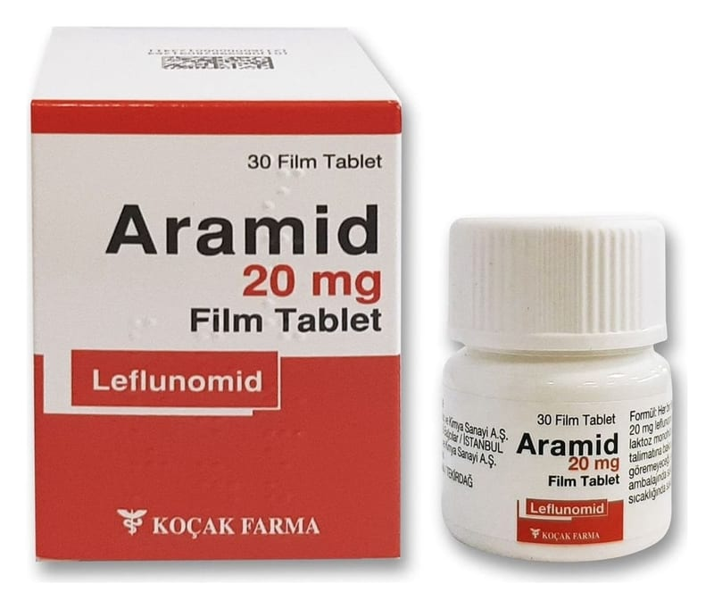

Aramid 20 mg Film Kaplı Tablet, 30 Adet

Ne için kullanılır
KT · Bölüm 1ARAMİD romatizmaya karşı kullanılan ilaç grubuna dahildir ve etkin madde olarak 20 mg leflunomid içerir. ARAMİD’de yardımcı madde olarak bulunan laktoz monohidrat sığır kaynaklıdır.
ARAMİD sarı renkli, yuvarlak, bikonveks film kaplı tabl etlerdi r. Tabl etle r 30 film tabl et içeren HDPE şişeler içerisinde bulunur.
ARAMİD aktif romatoid artrit veya aktif psöriyatik artriti olan yetişkinlerde kullanılır. • Romatoid artritin belirtileri tutulan eklemde iltihap, şişlik, hareket zorluğu ve ağrıdır. Tüm vücudu etkileyen diğer belirtiler iştah kaybı, ateş, enerjide azalma ve kansızlıktır. (kırmızı kan hücrelerinde azalma, anemi) • Aktif psöriatik artrit belirtileri ise tutulan eklemde iltihap, şişlik, hareket zorluğu, ağrı ve yama şeklinde kırınızı pullu deri döküntülerini (deri lezyonları) içerir.